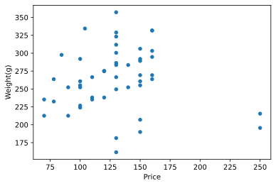
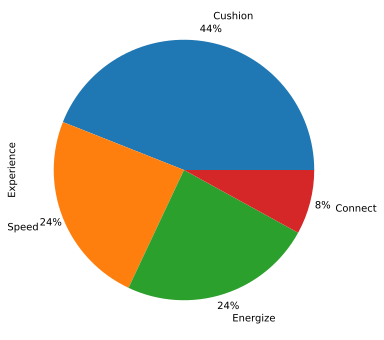

Brooks Shoes Data Analysis
Simple data analysis of Brooks Running Shoes. Data set available on Kaggle - see link below.
import matplotlib.pyplot as plt
import pandas as pd
# set file path
# Source data is availle from the link above
filePath = "data/data/kaggle/brooks/BrooksShoes.csv"
# read data to a DataFrame
df = pd.read_csv(filePath, parse_dates=True, delimiter=',')
# Check how many shoes we have
# Each row is a differnt shoe in some cases just a variation of an existing shoe.
print("Number of different shoes: ", len(df.index))
Number of different shoes: 50
## Now lets see how many of the shoes are road shoes
print("Number of road shoes: ", len(df.loc[df['Surface'] == "Road"]))
Number of road shoes: 39
## Basic scatter plot
df.plot(x="Price", y="Weight(g)", kind = 'scatter')
plt.show()

# Basic pie chart of 'Shoe Experience'
df_1 = df['Experience']
df_1 = df_1.value_counts()
df_1.plot.pie(y=df_1,figsize=(8, 8), autopct='%1.0f%%', pctdistance=1.1, labeldistance=1.2)
plt.show()
